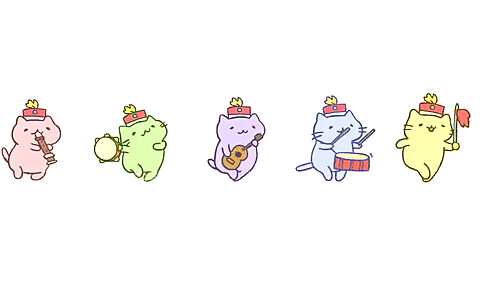

About Me
Email: siusiuyan_1116@yahoo.com.hk
Phone: +852 6845 4283
My name is Siu Tsz Yan, Natalie. Since childhood, I have been interested in mathematics. In high school, the teacher explained to us the contents of the statistics and calculus course. I was very curious and interested, so I decided to take mathematical calculus in middle school. My parents don't agree with the statistics I chose because they don't think studying statistics will be helpful for future job development. In order to get my parents' approval, I spent a lot of time in this subject. Finally, my parents also agreed that I should choose an associate degree program in statistics and statistics at university.
Education
Secondary school – TWGHs Yau Tze Tin Memorial College (2011-2017)
My life of secondary school is quite colorful, because I joined many activities, such as dance team, act team and prefect. Moreover, I became the leader of dance team when I was secondary three. Also, I got the scholarship of my school.
Associate - Hong Kong Community College (2017-2019)
My grades in the HKDSE exam were not good, but I still want to have the opportunity to attend university. Therefore, I chose to study an associate degree for two years. I am studying Data science and statistics. I learned a lot of statistics in the past two years. Finally, I successfully went to university.
University - The Hong Kong Polytechnic University (2019~now)
I am studying Data Science and Analytics in PolyU. In the beginning, I found it very difficult. Because it has more workload than associate degree. Fortunately, after one semester, I started to adapt to this life.
Hobbies

Dancing
I like to listen music. I start my dance life when I was 5. I joined the Chinese dance team in kindergarten. I am a leader of dance team when I was secondary school. Also, I participate many shows and competitions. I really enjoy my dancing life, because dance makes me relax in my busy life.